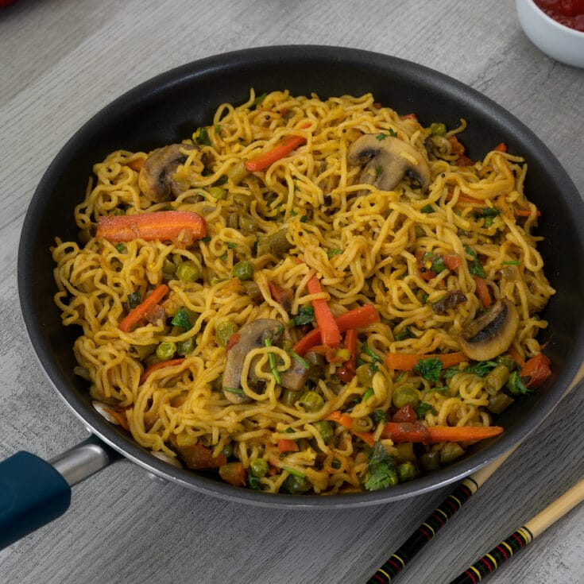

Glorious noodles the indian way!

This iconic brand is on a mission to champion the goodness of home cooking, renewing its global product portfolio with ingredients that people are familiar with, like those they might find in their kitchen cupboard.
Ingredients for a kickass maggi.
- Water
- Green Chillies
- Onion
- Tomato
- Table Salt
- Turmeric
- Subzi Masala
- Garlic
- Maggi
Steps to follow:
- Following quantities are for regular pack (70 grams)
- Take around 250 ml water in an utensil and place it on burner.
- One medium size onion washed and chopped, add into water.
- One medium tomato washed and chopped add into water.
- 1 or 2 fine sliced green chillies as per need, add to water.
- Add to the mix, 1 pinch of table salt, 1 pinch of turmeric, 1 pinch of subzi masala, 2-3 cloves of garlic (crushed).
- After adding all the things add maggi into the boiling water and let it boil until very little water has left.
- Now add Maggi Masala, the seasoning provided with the pack.
- Enjoy the flavorful bowl of Maggi!
Home
Tea
Potato Tomato dish
return to top